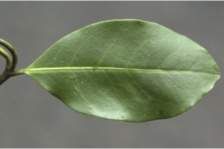
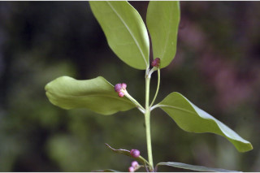
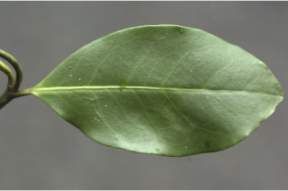
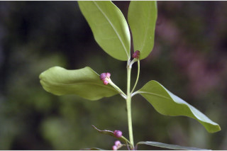

Small trees, up to 7 m tall.
7 ಮೀ ಎತ್ತರದವರೆಗೆ ಬೆಳೆಯುವ ಸಣ್ಣ ಮರಗಳು.
7 മീറ്റര് വരെ ഉയരത്തില് വളരുന്ന ചെറുമരങ്ങള്.
சிறிய மரம்
Bark smooth; blaze white.
ತೊಗಟೆ ನಯವಾಗಿದ್ದು ಕಚ್ಚು ಮಾಡಿದ ಜಾಗದಲ್ಲಿ ಬಿಳಿಬಣ್ಣ ಹೊಂದಿರುತ್ತದೆ.
മിനുസമാര്ന്ന പുറംതൊലി; വെട്ട്പാടിന് വെളുപ്പുനിറം.
மரத்தின் பட்டை வழுவழுப்பானது; உள்பட்டை வெள்ளை நிறமுடையது.
Branchlets terete, glabrous.
ಕಿರುಕೊಂಬೆಗಳು ದುಂಡಾಗಿದ್ದು ರೋಮರಹಿತವಾಗಿರುತ್ತವೆ.
ഉപശാഖകള് ഉരുതും അരോമിലവും.
சிறிய நுனிக்கிளைகள் குறுக்குவெட்டுத் தோற்றத்தில் வளையமானது, உரோமங்களுடையது.
Leaves simple, opposite, decussate, rarely ternate; stipules minute; petiole 0.3-0.5 cm long, flat above, glabrous; lamina 3-7 x 1.4-3 cm, elliptic or slightly broad elliptic, apex obtuse to bluntly acuminate with retuse tip, base acute, margin remotely serrate/crenulate towards apex, sometimes entire, chartaceous, glabrous; midrib thinly raised above; secondary_nerves slightly visible above and slightly obscure beneath; tertiary_nerves obscure.
ಎಲೆಗಳು ಸರಳವಾಗಿದ್ದು,ಕತ್ತರಿಯಾಕಾರದ ಅಭಿಮುಖ ಜೋಡನಾ ವ್ಯವಸ್ಥೆಯಲ್ಲಿರುತ್ತವೆ;ಅಪರೂಪವಾಗಿ ಸುತ್ತುಜೋಡನಾ ವ್ಯವಸ್ಥೆಯಲ್ಲಿ ಮೂರು ಎಲೆಗಳು ಇರುವಂತಹ ಮಾದರಿಯ ಲ್ಲಿರುತ್ತವೆ; ಕಾವಿನೆಲೆಗಳು ಸೂಕ್ಷ್ಮ ಗಾತ್ರದವು;ಎಲೆತೊಟ್ಟುಗಳು ಉದ್ದ0.3 ರಿಂದ 0.5 ಸೆಂ.ಮೀ ಗಾತ್ರ ಹೊಂದಿದ್ದು, ,ರೋಮರಹಿತವಾಗಿದ್ದು ಮೇಲ್ಭಾಗದಲ್ಲಿ ಚಪ್ಪಟೆಯಾಗಿರುತ್ತವೆ; ಪತ್ರಗಳು 3- 7 X 1.4 -3 ಸೆಂ.ಮೀಗಾತ್ರವಿದ್ದು,ಅಂಡವೃತ್ತಾಕೃತಿ ಅಥವಾ ಸ್ವಲ್ಪಮಟ್ಟಿಗೆ ವಿಶಾಲವಾದ ಅಂಡವೃತ್ತಾಕೃತಿ ಹೊಂದಿದ್ದು, ಚೂಪಾಲ್ಲದುದರಿಂದ ಕ್ರಮೇಣ ಚೂಪಾಗುವ ಮಾದರಿಯ ತುದಿ ಹಾಗೂ ಚೂಪಾದ ಬುಡವನ್ನು ಹೊಂದಿರುತ್ತವೆ, ಪತ್ರದ ಅಂಚು ತುದಿಯ ಕಡೆಗೆ ಗರಗಸ ದಂತಿತ/ ಸೂಕ್ಷ್ಮ ದುಂಡೇಣಿನ ದಂತಗಳನ್ನು ಹೊಂದಿರುತ್ತದೆ ಹಾಗೂ ಕೆಲವು ವೇಳೆ ನಯವಾಗಿಯೂ ಇರುತ್ತದೆ,;ಮಧ್ಯನಾಳ ತೆಳುವಾಗಿದ್ದು ಮೇಲ್ಭಾಗದಲ್ಲಿ ಉಬ್ಬಿರುತ್ತದೆ;ಎರಡನೇ ದರ್ಜೆಯ ನಾಳಗಳು ಪತ್ರದ ಮೇಲ್ಭಾಗದಲ್ಲಿ ಕಾಣುವಂತಿದ್ದು ತಳಭಾಗದಲ್ಲಿ ಅಸ್ಪಷ್ಟವಾಗಿರುತ್ತವೆ;ಮೂರನೇ ದರ್ಜೆಯ ನಾಳಗಳು ಅಸ್ಪಷ್ಟ.
സമ്മുഖ, ഡെക്കുസേറ്റ് ക്രമത്തിലുളള ലഘുപത്രങ്ങള്, അപൂര്വ്വമായി മൂക്കൂട്ടമായും കാണാം; നന്നേ ചെറിയ (അനുപത്രങ്ങള്); ഇലഞെട്ടിന് 0.3 സെ.മീ മുതല് 0.5 സെ.മീ വരെ നീളം, മുകളില് പരന്നിരിക്കുന്നു, അരോമിലം; പത്രഫലകത്തിന് 3 സെ.മീ മുതല് 7 സെ.മീ വരെ നീളവും 1.4 സെ.മീ മുതല് 3 സെ.മീ വരെ വീതിയും, ദീര്ഘവൃത്തീയമോ ചെറുതായി വീതിയുളള ദീര്ഘവൃത്താകാരമോ ആണ്, പത്രാഗ്രം (ഉപകോണാകാരമോ) വെട്ടിമുറിച്ചപോലുളള അറ്റത്തോട്കൂടിയ മുനപ്പില്ലാത്ത ചെറുവാലോടുകൂടിയതും, കൂര്ത്ത പത്രാധാരം, അരികുകള് പത്രാഗ്രത്തിനോടടുത്ത് (ദൂരെദൂരെയായി) ദന്തുമാണ്. ചിലപ്പോള് അവിഭജിതമാണ്, കടലാസ് പോലത്തെ പ്രകൃതം, അരോമിലം; മുഖ്യസിര ചെറുതായി മുകളില് ഉയര്ന്നു നില്ക്കുന്നു; ദ്വിതീയ ഞരമ്പുകള് മുകളില് അല്പ്പമായി ദൃശ്യമാണ്, താഴെ അസ്പഷ്ടമാണ്; ത്രിതീയ ഞരമ്പുകള് അസ്പഷ്ടമാണ്.
இலைகள் தனித்தவை, எதிரடுக்கமானவை, குறுக்குமறுக்கமானவை, அரிதாக மூன்று இலைகளை ஒர் கணுவில் உடையது; இலையடிச்செதில் மிகச் சிறியது; இலைக்காம்பு 0.3-0.5 செ.மீ. நீளமானது, குறுக்குவெட்டுத் தோற்றத்தில் பிளேனோகான்வக்ஸ், உரோமங்களற்றது; இலை அலகு 3-7 X 1.4-3 செ.மீ., நீள்வட்டம் அல்லது சிறிது அகன்ற நீள்வட்டம், அலகின் நுனி மழுங்கியது முதல் மழுங்கியதுடன் அதிக்கூரியது மற்றும் சிறிய பள்ளம் (ரெட்யுஸ்) கொண்டது, அலகின் தளம் கூரியது, அலகின் விளிம்பு நுனிப்பகுதியில் இடைவெளி நிறைந்த ரம்பபற்கள் அல்லது பிறை போன்ற பற்கள் உடையது, சிலவற்றில் அலகின் விளிம்பு முழுமையானது, சார்ட்டேசியஸ், உரோமங்களற்றது; மையநரம்பு மேற்பரப்பில் சிறிது உயர்ந்து காணப்படும்; இரண்டாம் நிலை நரம்புகள் மேற்பரப்பில் சிறிது தெளிவாகவும் மற்றும் அடிப்பரப்பில் தெளிவற்றும் காணப்படும்; மூன்றாம் நிலை நரம்புகள் தெளிவற்றது.
Inflorescence axillary cymes, 3-7 flowered; flowers reddish.
ಪುಷ್ಪಮಂಜರಿ 3 ರಿಂದ 7 ಹೂಗಳುಳ್ಳ ಅಕ್ಷಾಕಂಕುಳಿನಲ್ಲಿರುವ ಮಧ್ಯಾರಂಭಿ ಮಾದರಿಯಲ್ಲಿರುತ್ತದೆ; ಹೂಗಳು ಕೆಂಪು ಬಣ್ಣದವು.
പൂങ്കുലകള് 3 മുതല് 7 വരെ പൂക്കളുളള കക്ഷീയ സൈമുകളാണ്; ചുവപ്പ്നിറത്തിലുളള പൂക്കള്.
இலைக்கோணங்களில் அமைந்த சைம் மஞ்சரி 3-7 மலர்கள் கொண்டது, சிவப்பு நிறமான மலர்கள்.
Capsule, obcordate, 5-angled, scarlet; 1-2 seeds per lobe.
ಸಂಪುಟ ಫಲಗಳು ತಲೆಕೆಳಗಾದ ಹೃದಯಾಕಾರದಲ್ಲಿದ್ದು ಐದುಕೋನಗಳ ಸಮೇತವಿದ್ದು ಪ್ರತಿ ಹಾಲೆಯಲ್ಲಿ ಅರುಣ ವರ್ಣದ ಒಂದರಿಂದ ಎರಡು ಬೀಜಗಳನ್ನು ಹೊಂದಿರುತ್ತವೆ .
കടുംചുവപ്പ് നിറത്തിലുളളതും, അഞ്ച്കോണുകളുളളതും അപഹൃദയകാരത്തിലുളളതുമായ കായ; ഓരോ ഭാഗത്തും ഒന്നോ രാേവിത്തുകള് വീതം.
கேப்சூல், தலைகீழ் இதய வடிவமானது, 5 விளிம்புகளையுடையது, சிவப்பு நிறமானது, 1-2 விதைகள் ஒவ்வொரு பகுதியிலும் காணப்படும்.

 


